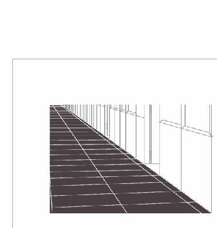

ВОПРОС / ОТВЕТ ДЛЯ НАЧИНАЮЩИХ
polzovatel-902 / 13.07.2010, 09:21/00:41
Форум:
Объясню на примере, чтоб было понятней... Открываю в кореле картинку (футболку с надписью) в формате JPG, мне нужно вытянуть из футболки надпись, т.е разъеденить файл... Говорят нужно формат изменить, еще что-то... Объясните, пожалуйста, что нужно сделать для этого...? Заранее спасибо.
Используя направляющие, построить перспективу, которая сходится в одной точке. Включить прилипание к направляющим и по ним дорисовать недостающие части изображения, а ещё лучше полностью отрисовать всё, это недолго. Вот пример для затравки:

П.С. Рисовать с помощью Polyline tool
Как использовать направляющие? И как включить прилипание к направляющим?
P.S. Corel русский.
Unayta, как использовать показано на анимированной картинке сообщением выше. Единственное чего там не видно это как их создавать. Для этого нужно кликнуть на одной из линеек и удерживая нажатой левую кнопку мыши, "вытащить" направляющую.
Прилипание, не помню как там в русском. Там должен быть выпадающий список с галочками. Может "привязка".
Именно как их создавать и интересовало. Про прилипание уже нашла. Спасибо за помощь.
Добавлено (29.11.2010, 18:14)
---------------------------------------------
И снова я с вопросами)
В документе был текст, текст замазали, отсканировали и перенесли в Корел - вопрос можно ли в Кореле убрать остатки текста? И если можно, то как?
Если не понятно, могу выложить сам документ.
Добавлено (29.11.2010, 18:15)
---------------------------------------------
Unayta, =)
Добавлено (29.11.2010, 18:16)
---------------------------------------------
Unayta, =)
так в фотопаинте же можно подчистить штампом как в фотошопе. он находится всписке кнопки с красным глазом.
тока там точка из которого берется образец указывается правой кнопкой.
ну или если там вобще белый фон то можно и селекшн тулом обойтись.
Здравствуйте. Есть вопрос.
Для одного объекта доступна только одна "линейная заливка"?
...и как тогда залить ломанный объект со всех сторон?
Добавлено (30.11.2010, 12:11)
---------------------------------------------
Здравствуйте. Есть вопрос.
Для одного объекта доступна только одна "линейная заливка"?
...и как тогда залить ломанный объект со всех сторон?
ARTist,
Переведите с русского на русский.
градиентная радиальная заливка
Попробую...
Предположим, есть прямоугольник загнутый под 90 градусов (например, как рука согнутая в локте) и нужно по всему периметру этой фигуры, равномерно, закрасить градиентом т.е. 6 сторон -2 узкие) = нужно закрасить 4 стороны, но градиент (интерактивная заливка) только одна...
Blend
Страницы